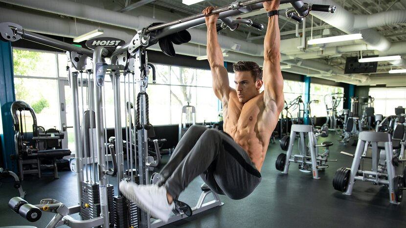
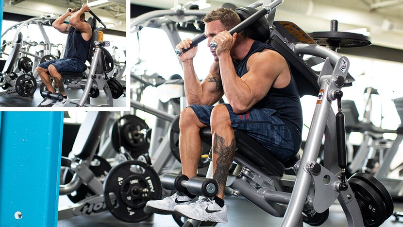
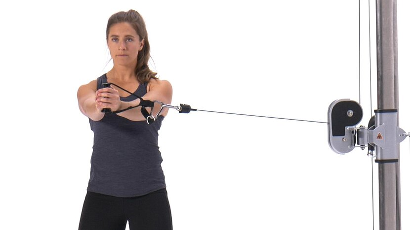
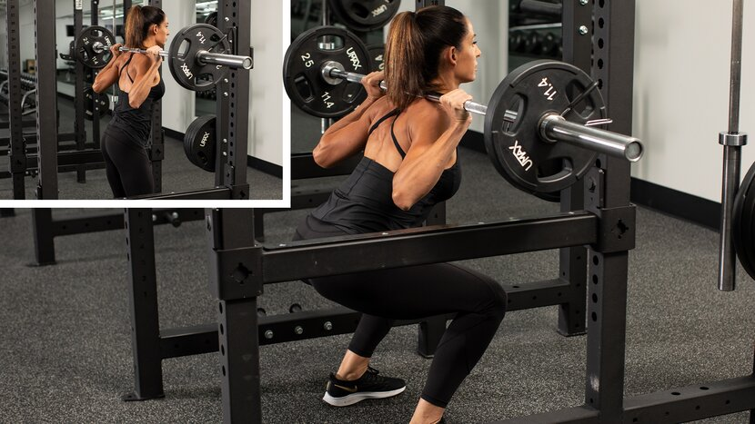
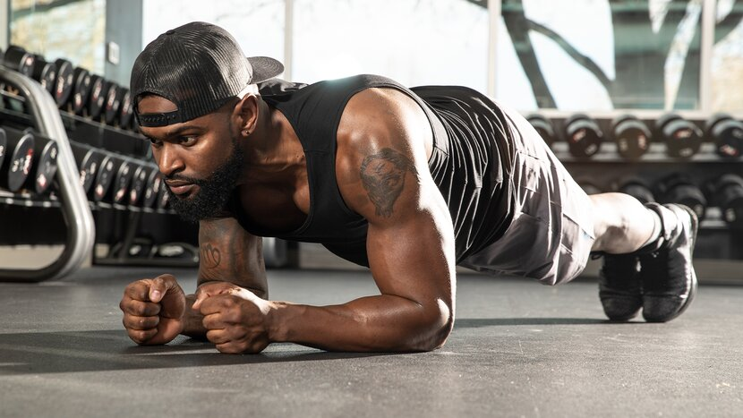
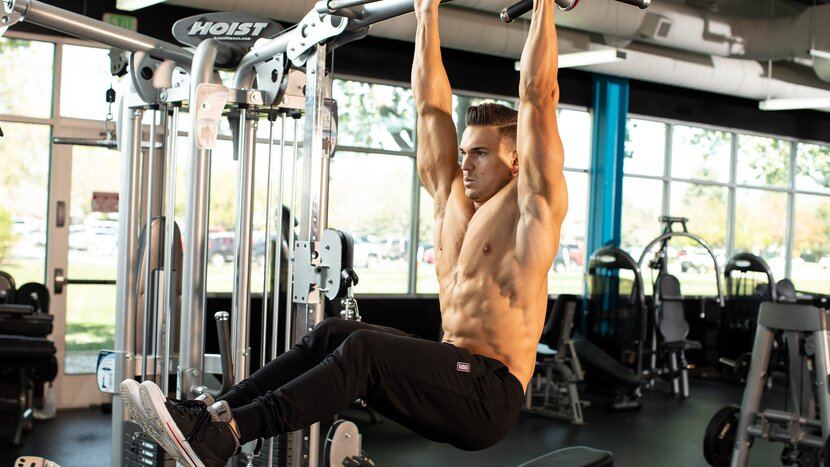
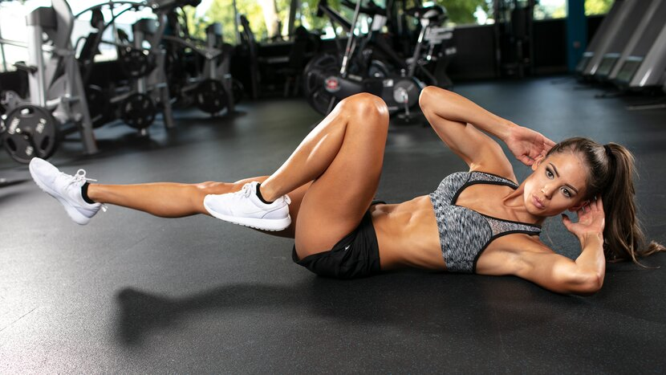

Chest | Back | Shoulders | Biceps | Triceps | Legs | Abs
Let's get one thing straight: This is no late-night infomercial, and we're not going to try to sell you a single "best ab exercise ever." Too many have tried to make that claim, and it's just not the case. The truth is, carving the perfect six-pack requires a variety of exercises and months if not years of consistent work.
That doesn't mean you shouldn't try! It just means you need to get moving. We've put together a full slate of top-level choices for building your abs, in no particular order, along with a brief explanation of what makes each one great and—when available—the research to back them up.
Here's how we chose them:
- Ease of learning and performing
- Total muscle stimulation and intensity
- Popularity among diehard lifters and bodybuilders (This matters!)
- Availability of equipment in commercial gyms
But definitely don't forget about the kitchen! As registered dietician and bodybuilder Paul Salter explains in, "How Six-Pack Nutrition is a Different Beast than Fitness Nutrition," the more ambitious the goal you set, the less wiggle (i.e., cheat) room you have.
Now, let's meet your new favorite ab moves.
10 Best Ab Exercises
Hanging Knee Raise

Why it's on the list: There are many reasons to like leg raises, but top of the list is their scalability. You can start doing bent-knee raises in a captain's chair or with ab straps to focus on the lower core, work up to straight-leg raises, and then move to a hanging bar. By the time you're doing full straight-leg toes-to-bar raises, you've built unparalleled strength in your entire core.
Another point in their favor: You can increase the degree of difficulty and resistance by holding a medicine ball between your knees or ankles, allowing you to train in a lower rep range. Or you can add a twist at the top or graduate to full-blown "windshield wipers" to target your deeper rotational muscles and obliques.
No matter the variation, just remember to use your abs, not momentum, to get your legs as high as possible on each rep.
Hanging Knee Raise Variations for Ab Development:
- Hanging leg raise
- Captain's chair knee raise
- Parallel bars knee raise
- Hanging dumbbell knee raise
- Hanging toes-to-bar
- Hanging windshield wiper
In your workout: Do this move first or second in your routine for 3 sets of 10-15 reps, or however many reps you can do. If using a medicine ball, try a dropset simply by letting go of the medicine ball when you hit failure.
Machine Crunch

Why it's on the list: Ab exercises with added resistance don't get enough love! Extra resistance spurs growth in the fast-twitch muscle fibers like almost nothing else and can really build up the "bricks" of your six-pack.
By using a machine, you can also adjust the load and train to failure at just about any rep target you want. A pin-loaded machine works especially well when doing dropsets. If your gym doesn't have a dedicated ab machine, you can still get the same benefits using cables or bands.
Machine Crunch Variations for Ab Development:
- Ab crunch machine
- Smith machine V-up
In your workout: This works great as one of the first exercises in your ab routine. Use a challenging weight for a lower rep target. Of course, it also works with lighter weight as a burnout at the end. In either case, 3-4 sets of 10-15 reps is a solid formula.
Pallof Press

Why it's on the list: This increasingly popular movement trains your abs to do what they're supposed to do: stabilize your skeleton. The Pallof press is an anti-rotation movement, meaning the body is actively fighting rotation throughout the motion. By utilizing exercises like this, you can increase core stability in various planes of movement and reduce the likelihood of injury.
If you've never done these before, expect to be challenged more than you might expect!
Pallof Press Variations for Building Strength:
- Pallof press (cable or band)
- Pallof press with rotation
In your workout: There's no need to go heavy here; all it will do is compromise the quality of the move. Do these after your most difficult ab move of the day using a weight that allows you to manage 3 sets of 10-15 reps on each side.
Cable Crunch

Why it's on the list: The strength of this exercise is its versatility. It works for any fitness level, on any cable machine, and you can add any amount of resistance you need to train at your target rep range. You can also use a resistance band if you don't have a cable stack handy.
Despite these advantages, plenty of people still do them wrong! Here are the biggest points to remember, from the article, "4 Cable Crunch Blunders."
- Squeeze your glutes and keep your hips forward. Sitting back targets more hip flexors.
- Round your back during each rep.
- Keep your hands next to your head to avoid making it a shoulder and upper-body move.
- Keep your neck neutral. Don't tuck your chin.
Got it? Now put it into action.
Cable Crunch Variations for Ab Development:
- Kneeling cable crunch
- Kneeling cable oblique crunch
- Kneeling cable alternating crunch
- Standing cable crunch
In your workout: This is another good first or second exercise that can be done for a low-to-moderate number of reps. Do 3 sets of 10-15 reps. If you want to add a dropset, change the pin or use a lighter resistance band when you reach muscle failure and immediately perform another 8-10 reps.
Decline Crunch

Why it's on the list: This old-school fave amps up the ab engagement by increasing the range of motion over standard crunches. You can also dial up—or down—the degree of difficulty by adjusting the angle of the bench.
Holding a medicine ball, dumbbell, or plate against your chest adds a further level of customizable resistance. If you want the ab-chiseling upside of cables or gym machines but don't have access to a gym, this is for you.
Be warned: Since your feet are hooked, it's all too easy to use your hip flexors to come up instead of your abs. Keep your lower back flat to the bench and your abs engaged. If you're not feeling a wicked burn, drop all the weight, put your hands on your belly, and really focus on the contraction at a slower pace.
Decline Crunch Variations for Ab Development:
- Decline oblique crunch
- Decline plate sit-up
- Decline reverse crunch
In your workout: Position this one later in your routine after you've built up some fatigue from a really challenging first exercise or two. Do 3 sets of 10-15 reps. If you find 15 reps too easy, simply increase the angle of decline or use a heavier ball or plate.
Squat

Why it's on the list: No, we're not going to echo that old myth that squats and deads are all you need for abs. You need more! But there's no debating that both front and back squats force you to learn how to brace your abs to maintain a neutral, upright position. And before you say, "It doesn't count if you wear a lifting belt," a number of studies have shown that a belt actually increases ab activation during squats.
Oh, and don't worry about balancing on a BOSU ball to increase the work of your stabilizers. Research has shown that if you just go heavy with your squats on the floor, you'll get all the ab stimulus you need.
Squat Variations for Ab Development:
- Barbell front squat
- Goblet squat
- Zercher squat
- Overhead squat
In your workout: Regularly program both back and front squats into your routine. To keep it interesting, rotate through in four-week waves, or alternate weeks between back and fronts. Also, if you're following a dedicated program like the 7-Day Six-Pack, do your workouts after your heavy leg days, not before. The last thing you want is to feel sore or weak when you're under the bar!
Russian Twist

Why it's on the list: To recruit the obliques, you need to do one of three motions:
- Bend to the side
- Rotate your trunk
- Suck in your belly
By adding a medicine ball to the twist, you're hitting your obliques with a double whammy by requiring the upper abs to contract isometrically to stabilize against the weight as you move. Try to get a little crunch on either side after the rotation to up the ante.
Twist Variations for Ab Development:
- Russian twist
- Dumbbell Russian twist
- Medicine ball half moon
- Cable lying twist on ball
- Standing cable twist (high to low)
- Standing cable twist (low to high)
In your workout: Do this exercise toward the middle of your routine for 3 sets of around 15 reps per side. Increase the degree of difficulty by extending your arms out or using heavier weight.
Ab Roll-out

Why it's on the list: This cheap piece of equipment has gained a cult following over the years, and for good reason. EMG data suggests that using an ab wheel is equally if not more effective than hanging leg raises, sit-ups, and reverse crunches at activating the abs.
Why is the ab wheel so effective? It capitalizes on the concept of eccentric strength-building perfectly. As you roll out, your trunk must actively fire while those abs stretch to maintain a neutral spine without collapsing under your body weight and gravity.
Ab Roll-Out Variations for Ab Development:
- Ab wheel roll-out
- Exercise ball roll-out
- Suspended ab fall-out
- Reverse ab roll-out
In your workout: Build up to 3 sets of 8-12 reps, rolling all the way out and back on your knees. If you can't do all the reps prescribed or if your back is arching, reduce the distance and maintain a neutral spine, then slowly work to extend it over a few weeks.
Exercise Ball Pike

Why it's on the list: It turns out the exercise ball is good for more than just sitting and waiting for your partner to finish their set! A research team demonstrated that the pike movement is one of the most effective total-ab activators out there. It topped the EMG list for upper abs, lower abs, and obliques. The version in the study was performed on a ball, but pikes can also be done on a suspension strap system.
Exercise Ball Pike Variations for Ab Development:
- Exercise ball pike
- Medicine ball pike
- Glider pike
- Suspended crunch
- Hanging toes-to-bar
In your workout: Since it targets a large degree of the muscle mass of the abdomen, the pike can either be used to get your routine started or as a really brutal way to finish it out. Shoot for 2-3 sets of 8-12 reps. If you can't complete reps with good form, start with exercise ball knee roll-ins.
Plank

Why it's on the list: Muscle activation studies consider the plank a mid-level exercise. But in this case, that doesn't tell the whole story. It's first and foremost a great transverse abdominis move, but that muscle is deep, so can't be measured by EMG.
Planks primarily made the list because of how easily you can use different variations to change the level of difficulty. If an elbow plank is too difficult, perform it with the arms straight or simply drop to your knees. Too easy? Lift an arm or a leg—or an arm and a leg. Put your feet into suspension straps or on a stability ball. Each one of these progressions leads to a greater training stimulus to the abs.
Plank Variations for Strength and Growth:
- Elbow plank
- Side plank
- Plank leg raise
- Feet-elevated plank on ball
- Elbows-elevated plank on ball
- Side plank hip dip
In your workout: You can do these last on ab day, but you can also do them at home just about any time you want. Since it's an isometric move, shoot for time rather than reps. Doing 3-5 sets of 30-90 seconds in whatever variation is toughest for you should get you shaking!
Best Ab Workouts
- Hard and Heavy Ab Workout
- All-in-One Six-Pack Workout
- Machine Ab Workout
Hard and Heavy Ab Workout

If you're ready to build your ab muscles so they're visible even at a slightly higher body fat level, this is the workout. With hanging leg raises and a weighted superset, you'll be feeling your core right out of the gate. Finishing with a round of kneeling cable crunches, you'll leave the gym afraid to cough or laugh.
1. Hanging leg raise
3 sets, 15 reps (rest 90 sec.)
2. SUPERSET
Perform the exercises in order, resting as little as possible between exercises and 1 min. between sets.
Lying Windshield Wipers
4 sets, 10 reps (no rest)
Decline Weighted Sit-Up
4 sets, 12 reps (rest 1 min.)
3. Kneeling cable crunch
3 sets, 15 reps (rest 90 sec.)
All-in-One Six-Pack Workout

Chasing a six-pack? This ab workout is a perfect way to start your day or the perfect end to any workout. With bodyweight exercises and circuit-style intervals, you'll hit every angle of your abs and work up a sweat in less than 20 minutes!
1. Ab Rollout
Perform on your knees and limit your range of motion to what you can do without letting your lower back droop. If you reach failure, hold a static position with your arms below your shoulders for the remainder of the 30 sec.
3 sets, 30 sec (rest 1 min.)
2. Lying Leg Raise
3 sets, 30 sec (rest 1 min.)
3. SIDE PLANK
Perform for time on one side before switching to the other side. Rest as little as possible between sides and 1 min. between sets.
Side Plank
3 sets, 30 sec (right side, no rest)
Side Plank
3 sets, 30 sec (left side, rest 1 min.)
Machine Ab Workout

This three-move cable ab workout is simple, but brutal. Each of the exercises are performed for 3 sets of 10-12 reps. So, what's the catch? You'll perform a dropset at the end of each movement. Take each set to failure and expect to have nothing left in the tank!
1. Kneeling cable crunch
After the final set, perform a single dropset.
2. STANDING CABLE HIGH-TO-LOW TWIST
Perform for all reps on one side before switching to the other side. Rest as little as possible between sides.
Cable Cross-Body Pull
After the final set, perform a single dropset.
3 sets, 10-12 reps (left side, no rest)
Cable Cross-Body Pull
After the final set, perform a single dropset.
3 sets, 10-12 reps (right side, rest 1 min.)
3. Cable reverse crunch
After the final set, perform a single dropset.
3 sets, 10-12 reps (rest 1 min.)